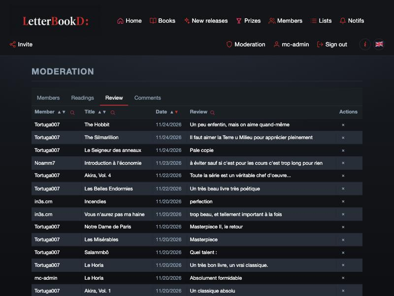

Moderation — ReviewsAdmin only
Why it exists: All reviews written in the club, with an excerpt of the text. Lets admins quickly remove an inappropriate review without touching the reading record itself.

Walkthrough
The table has these columns: Member (review author), Title (book concerned), Date (review date), Review (text excerpt), and Actions (cross to delete). The Review column can be sorted and filtered by its text, which is useful for finding a keyword that prompted a report.
Deleting a review removes the text but keeps the reading record (rating and status), so the member's rating stays in the average.
Action chains
Each row describes a trigger in the UI, the modal or form it opens, and the resulting effect.
| Trigger | Modal / Fields | Effect |
|---|---|---|
| Sort / filter icons (magnifier on the Review column) | — | Standard sorting; text filter on the content of the reviews. |
| Cross (×) button on a row | Confirmation POST form. | Deletes ONLY the review text. The rating stays, the reading record stays, and attached comments stay but lose their context. |